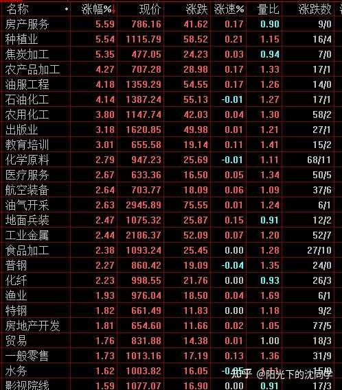
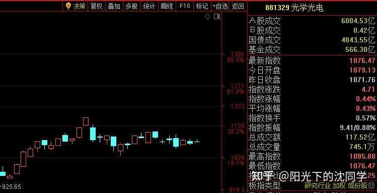
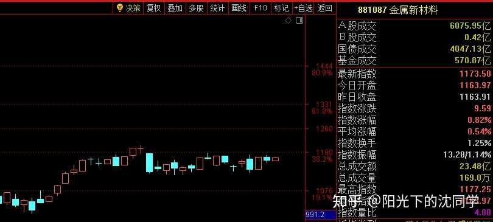
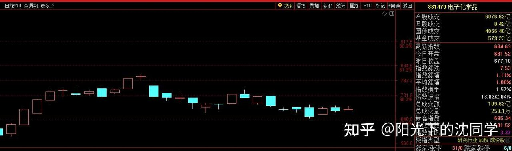
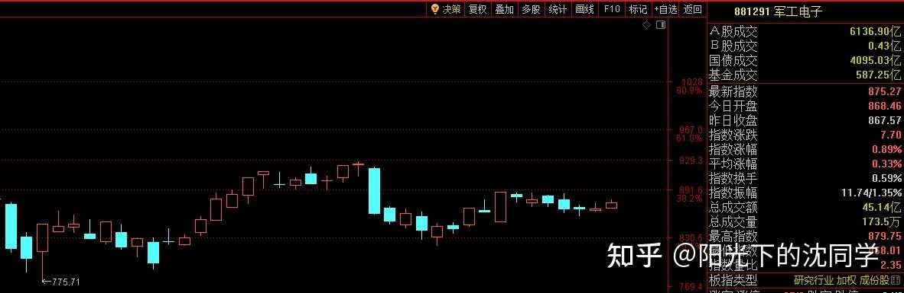
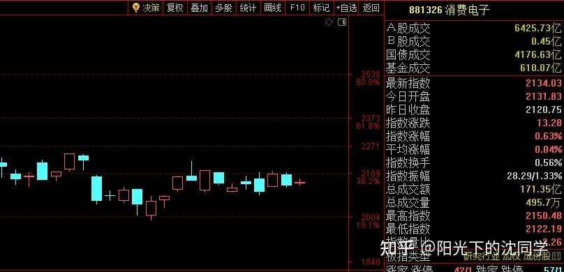
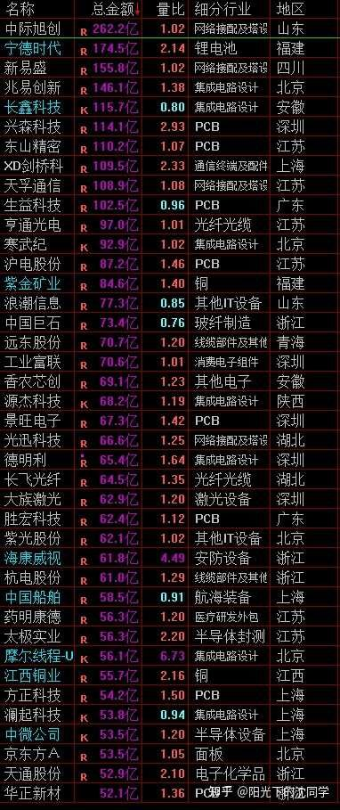
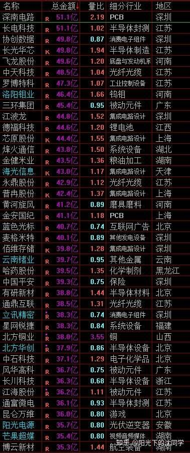
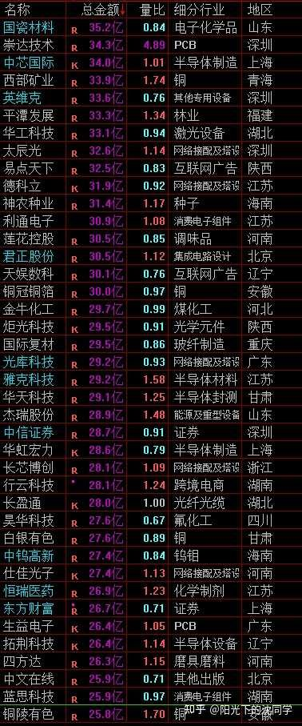

本文的核心逻辑在于剖析存量博弈下A股市场的资金面与筹码区间。作者指出，当大盘成交量萎缩、缺乏强有力的增量资金（如事件驱动的主线大爆发）时，指数大概率在3950-3650区间震荡。这种状态下，盲目追高或频繁进行短线交易的胜率极低，因为资金面不支持大面积上涨。内在传导逻辑是：弱势行情下市场缺乏承接盘，高开或权重股拉升容易引发获利盘兑现，导致指数迅速回落。因此，正确的博弈策略是顺应市场趋势，在区间下轨或杀跌时低吸以提高胜率，或者通过降低总仓位、配置长期稳健资产（如债券、红利）来对冲风险，实现用时间换空间。
从大部分个股表现来看，走势就是大不如前的，整体市场成交量，资金面也比较弱，这种行情下去频繁交易胜率会比较低
综合方方面面最新情况来看，市场维持在3950-3650区间运行概率会大一点
要站稳3950以上，也就是突破目前的综合筹码区间注【本质逻辑】指多空双方在特定价格带内反复争夺、成交密集的区域。在此区间内，由于缺乏增量资金打破平衡，多空力量势均力敌，导致指数来回震荡。【新手提示】切勿在区间内部盲目追涨杀跌，应盯紧区间上下轨，靠近下轨时分批低吸的胜率远高于追高。，需要稳步放量注【本质逻辑】指市场成交量呈现温和、持续的放大状态，这代表增量资金（场外大资金或机构）在不断进场建仓，而非一日游的投机炒作。【新手提示】放量必须伴随价格的稳步推升，如果某天突然爆巨量但价格不涨或者冲高回落，往往是主力出货或多头力量衰竭的信号。，不需要突然成交量很大，然后又缩回去，这种没用，每天可以增加一点，慢慢增加，指数慢慢突破，这种才有力度，有新的变化
不然不管因为什么利好，或者权重股短期带动，出现拉升，高开去突破3950，或者接近4000点，这种都很容易快速回到3950-3650区间
赚钱效应，成交量不发生根本性改变，指数短期的波动没必要那么在意，弱势行情就是大部分时间在综合筹码区间运行
当然也不是3950-3650区间就是最终底部，如果赚钱效应再下降，成交量再减少，最终1.5万亿都没有，那肯定还有新的底部
就是这样配套来的，什么样的赚钱效应和资金面变化，对应什么样的筹码区间运行
你想胜率高一点，就要客观的去分析这些情况，然后尽可能买的比其他投资者便宜
实战来讲，现在如果你买在3950以上，胜率就不高，但你买在3950-3650区间下轨，或者买在这个区间的杀跌中，胜率就肯定比其他投资者高，你就有了超跌反弹卖出获利了结的机会
而其他投资者只能是追高以后考虑止损或者回本的问题
这种是整体行情带来的实战胜率思考
想提升胜率就不能乱加仓，不能凭感觉去博运气，每次都靠运气，总有靠不住的时候
能控制好自己的手，拿得住钱，等到好时机再出手，本金当然会稳步增加
当然大家想赚钱，天天想交易，天天想有收获这种心理很正常，都是这样过来的
股市天天开盘，天天有涨停板的股票，那肯定是希望自己天天赚钱的，人之常情
但在现实交易中碰壁了，才会意识到实战多难搞
天天找机会不如只做高胜率机会
在情况不对劲，行情下跌趋势的时候不如多留现金
只要你手里有钱，总会兜兜转转都出来机会，你看好的各种资产，都会有走势不好，非常扑街的时候，这种时候去配置一定是成本更低，未来赚钱空间更大的
你买早了，仓位没有控制好，导致后面没钱加仓，那你买的东西再好，未来也是等解套，就没有了收益空间，持仓也煎熬
只有自己体会过这些，才会明白仓位控制，止损，不要乱加仓的重要性
再好的东西一样会大跌，没有把控好加仓的节奏，就要去承受持仓体验很差的痛苦，在这种痛苦过你如果没有领悟到仓位控制的重要性
那你下一次换一个资产也是一样的，因为都是周期，都是一样的涨涨跌跌
你不改变自己的仓位控制逻辑，一直认为是自己买错了，换一个资产还是喜欢满仓，喜欢重仓买，那肯定还会不断重复这些情况
其实不管是什么资产，在几年里面走势不会有太大差距，优质资产也是长期持有很多年才有看出来复利威力
垃圾股买的便宜，买点把握好有时候1-2年里面走势都比绩优股好
真的有很多投资者会以为自己买的东西是基本面很好的，就可以不需要仓位控制，就可以重仓去熬，认为反正长期没事，忽略了自己的承受力
想象中是觉得套几年无所谓，都可以回来，实际上真的套起来，心态早就崩了，体验非常非常差，很影响生活和心情
任何资产都应该一视同仁，都要尽可能买的便宜，控制好仓位，预留足够加仓空间
把仓位控制做好，就算买的东西基本面不太好，都有比较大赚钱的概率
反过来，如果你没有做好仓位控制，买的东西很好，一样可能好几年不赚钱，甚至深套
因为这些我都体会过，我有过无数次非常自信的错误交易，有过死扛优质资产的非常不好体验，都是我自己也犯过的错，分享给大家这些心得，希望大家少走弯路

- 房产服务、种植业等板块涨幅居前，但成交额和量比相对温和，说明属于存量资金博弈下的局部轮动行情。
- 涨幅前列多为防御性或周期性小题材，缺乏主导大盘的权重板块呼应，暗示市场目前正处于缺乏大方向的胶着状态。
每天原创不易，读者朋友千万不要忘记点赞支持一下
正所谓先赞后看，腰缠万贯
大家可以先点一波赞，我们再继续慢慢聊
祝点赞的朋友福寿无量，天天开心
整体行情是比较一般的，最近细分领域资金面不错的，农林牧渔是游资在博弈注【本质逻辑】指短线热钱（游资）在缺乏宏观主线的背景下，通过抱团炒作某些细分小题材（如农林牧渔）来制造局部的赚钱效应。这类资金来得快去得也快，不具备长期基本面支撑。【新手提示】跟随游资炒作属于火中取栗，一旦短线情绪退潮，个股往往会迅速跌回原形，新手极易被深套。，上升趋势还可以，算是目前为数不多还能走上升趋势的
然后资金面来看，还有资金在玩的，光学，新材料，军工电子，电子材料，消费电子这些也可以看看机会，有不少好公司在低位可以挖掘，而且最近有不少细分领域利好
这些都是目前为数不多资金面还可以的机会

- 光学光电板块K线呈现震荡整理形态，红绿K线交替出现，上方面临前期高点压力区。
- 多空双方在此位置分歧严重，买盘力量未能形成合力突破，暗示短期内仍以区间震荡蓄势为主。

- 金属新材料板块近期经历了一波脉冲式上涨后，进入横盘整理阶段，成交量有所萎缩。
- 这种走势表明追高资金开始谨慎，场内获利盘选择锁仓或观望，短期缺乏继续上攻的爆发力。

- 电子化学品板块在经历前期阴跌后出现企稳迹象，但下方支撑力度尚需确认。
- 属于典型的超跌后技术性修复，由于缺乏持续的资金进场跟风，盲目抄底极易遭遇二次探底。

- 军工电子板块近期波动收窄，成交量维持在较低水平，多空双方处于极其微弱的平衡状态。
- 这种“死水微澜”的走势意味着市场注意力未在此处，短线参与很难获得预期的爆发性收益。

- 消费电子板块整体重心有所抬升，但上方长影线较多，说明盘中多头试盘时屡次遭到空头砸盘打压。
- 反映出上方套牢盘压力较重，资金拉升意愿不强，容易出现冲高回落的骗线行情。
现在这种成交量没办法大面积大涨
也没办法突然有非常主线的行情大爆发，这些都是需要非常大利好和事件驱动的
不管是指数还是板块出现大牛市，都是有事件带动，9.24，还是Ai产业链爆发，航天航空，还是过去的新能源什么的，都不是凭空突然来的行情
现在就是没有这些现象级的行情，现在活跃的很多板块都是持续性不会非常强，博弈价值没有那么高的，游资博弈偏多，你要把农林牧渔，传媒出版文化去和半导体，AI这些比，肯定不是一个量级，但现在市场没有那种主线，还想继续博弈的资金，也就只能做这些持续性一般般，短线博弈注【本质逻辑】依靠市场短期情绪波动和资金面热度赚取差价的行为，极其考验对盘面节奏的敏锐度和执行纪律的能力。【新手提示】上班族和精力有限的散户由于无法时刻盯着盘面，千万不要把短线做成长期抗战，一旦趋势不对必须果断止损，绝不能死扛。炒作一波玩一玩
因为有些资金就是一直在市场做短线的，他们是这样的风格，任何时候都可以搞出来一些小题材，炒作各种东西
大家可以看不上一些持续性一般般，不是很主线的炒作行情，可以休息，但更加不能勉强去做选择资金面很差，下跌趋势的行情，去做超跌反弹，那更加麻烦
不管持续性怎么样，短期博弈肯定还是上升趋势的方向，资金面活跃的方向更容易上涨，只不过是持续性问题
核心主线可以持续1-3年，可以一直有波段，普通炒作可能就几个月，最终都是跌回去，也没有什么很大区别，关键是你想不想参与，能不能把握这种博弈机会
而不是你可能觉得目前短期炒作的东西你不认可，你硬要去短线博弈你觉得好的东西，但市场目前资金面不认可，趋势也不认可
那最近结果肯定是不如休息，趋势不好，资金面不好，短线博弈大概率亏钱，还不如一些莫名其妙炒作，短期趋势好的
这个是短线博弈的精髓
越是短线，越看市场给不给你机会
你要忽视市场，应该是长期在美股，债券，红利这种里面去熬，那可以通过很多年的坚守熬出头
你又要做短线，又不关心市场，只按照自己的喜好去做，一定是难
这个情况也是很多朋友喜欢咨询交流的点，就是自己非常非常喜欢某一些板块，方向，也确实这个方向是非常核心的新兴行业，这些都没有问题，但短期市场没有人做，你肯定就不能自己硬做，亏了也要马上止损，不然等你深套30%以上，50%以上，那时候热点来了，行情好了，你都已经套的没脾气了
做短线不能在自己的世界里，一定一定要看最新的市场资金面变化，没有机会就拿得住钱等，天天去研究你喜欢的方向，去等待机会，而不是冒然买入股票等，这个非常错误
因为大部分股票在没有行情的时候，都是扑街的，都是阴跌的，都是走势难看的
不是什么股票都是极少数稀缺的红利股，可以通过长期股息复投来让你没有那么难受
大部分股票，只要你没有买对趋势，都是难受的，都是不如不买，不如留着钱看的
这个真的不开玩笑，不要和未来的机会和当下的买入混在一起
短线和长线也不能混为一谈
这里面有很多很多区别
短线账户就是要经常清仓的，因为没有机会就是不应该做的
任何曾经火爆过的热点，包括现在在火爆的热点，最终都会平静，都会跌回去，好方向很多，不缺各种好公司，可以炒作的点
没必要提前那么早做短线博弈，短线博弈的关键就是时间，就是把握机会，抓上升趋势行情，而不是因为这个企业，方向长期有机会炒作，就不管这些，提前布局，那肯定早了的
做不好短线博弈都是时机把控，资金面分析，趋势分析基本功不扎实导致的
学会了怎么选好公司，也知道哪些企业是那种很多题材的龙头股，但总是买早了，这个是大部分新手投资者的问题
也是把长线和短线混在一起做的问题
短线你就看现在市场盘面怎么样，不行就不做，不要管他未来怎么样，不要管他有没有炒作空间，因为其实都有机会，都是好东西，短线到处是机会，不要觉得自己找到宝了，要马上去买，那只不过是你研究的太少了，看什么都是宝贵机会，没有那么宝贵
实际上全球这么多资产，真正长期复利比较好的资产寥寥无几
都是轮流炒作罢了
你做短线，还不在意最新的行情情况，那肯定做不好
以上这些都是我自己博弈的实战心得，大家一定要认真多看看
不能为所欲为，按照自己的想法去做短线
市场给你机会才有机会，市场没有机会就是没有机会，听市场的，不要光自己想
最适合新手投资者，上班族，股龄10年内投资者的投资策略分享
美股市场暂时没有什么加仓机会，依旧在高位运行
黄金还需要再调整调整会出现定投机会
红利低位的优质品种可以继续关注，红利长期来看估值目前依旧偏低，只是局部某一些板块表现超预期
债券依旧看好，值得闲钱配置，获利了结出来的钱可以先买债券，等以后全球股市崩盘了再慢慢换到股票里面
这些长期资产就是要慢慢熬的，慢慢等待
相当于赚钱情况你都知道，就是不知道什么时候大跌，你忍得住，等得到大跌买入，你就复利高于7%-15%，你忍不住，提前买，复利就趋于或者低于7%-15%
这个完完全全看人性
短线博弈这个不好说，运气成分和止损果断很重要
长线的优质资产配置真的就是看你的心态，你对自己的控制怎么样
有些投资者是很清楚这些资产很好的，但他就不买，他觉得慢，看不上这个收益，他一定要去博弈超额收益
当然也可以，但是他做其他的交易没有什么经验，还喜欢满仓追高，到处找利好，也不止损
相当于说没办法做好短线的情况下，还看不上长期的稳定复利
属于两头拧巴
这种就不太好
不是一定要做长期稳健投资，而是要做自己擅长的，高胜率的投资
只不过刚刚好99%的投资者都是普通投资者，都做不好短线投资，所以大家才应该好好珍惜美股，黄金，红利，债券
投资是要匹配自己综合能力的，而不是你想多赚钱，就怎么样去投资
没有人不想赚钱，是真的很难赚钱，尤其是资本市场，都是高手，都是大鳄，赚不到钱是正常的，亏钱也是常态
能在这样一个高手云集的市场上能有一些长期稳定的复利品种去慢慢赚钱，真的挺好的，一定要珍惜
我是真的每天反复提醒，不管怎么样，你最少40%的配置要给这些长期稳定资产，不然长期大仓位博弈下去，一定是浪费时间的
短线不能大仓位做，也不适合上班族，不适合普通投资者
你需要基本功非常扎实，且有长期实战经验，有很果断冷静的性格，有时间一直看盘，心态非常非常好，可以不断学习，不断进步
你有这么多时间去专研一个事情，其实你不仅仅可以做好短线，你做什么都可以成功的
你如果不是这种类型的人，其实就做不好短线，但大部分投资者没办法看清楚自己，总是觉得可以投机取巧
被利益蒙蔽了双眼，认为可以轻轻松松的博弈到大钱
在大幅亏损以后，才能认识到这些错误，但如果投入的本金过大，肯定也是很难挽回的
投资风险是需要提前想清楚的，后悔的代价太大了

- 核心宽基指数最新估值水位表清晰标出了泡沫、高估、合理与低估区间。
- 为投资者提供了宏观安全边际参考，明确提示当前大盘并未处于全面大底，盲目重仓风险收益比极不划算。
大家有任何投资疑问，有什么想交流的都可以付费咨询，想单纯支持一下也可以
【在知乎上我的主页咨询即可，没有任何群，不搞私下小圈子】
家庭资产长期稳健配置方案分享，仓位优化，估值分析，行业分析，心态调整，各种投资学习技巧都可以咨询
大家的支持和尊重是我创作的最大动力
感恩大家每天的付费咨询和打赏，感谢大家对知识的尊重，感谢大家对我的支持
欢迎提问
---
适合职业投资者，10年以上经验老股民，基本功极其扎实投资者的实战分享
继续聊实战
短期没有什么特别好做的机会
大部分股票都资金面一般般，市场上活跃的细分领域机会不多
这种行情肯定是需要大量预留现金的，等后面行情明朗，不管是重新走强，还是大跌，肯定都比现在去冒然加仓好
因为真的有行情不可能是一两天，你不存在所谓的踏空
很多人怕踏空是怕买不到最低点罢了
实际上真的有机会，是趋势性的机会，最低点不重要，趋势才重要
现在就是没有上升趋势，所以不太好做，现在选择现金比选择个股好
选择买债券胜率比个股高
短线账户暂时不打算交易，继续等机会，耐心比什么都重要
长线账户其实目前除了港股在给一些机会，美股位置偏高的，没办法加仓，A股也一样不便宜
长线账户最近就是看看港股机会，尤其是现在到12月左右，都是港股市场的重要时间节点，恒生科技成分股大改之前，是可能纳入的那些科技股收益，权重股承压，纳入以后是权重股估值修复，这些纳入以后的科技承压，当然行情会提前一点出现这些切换，这是港股市场的交易机会
其他机会等市场多一些杀跌，再便宜一点再说
总仓位肯定是不推荐55%以上的，尽可能低一点比较安全
以后真的跌起来有买不完的筹码，只会缺钱，不会缺机会
行情不做好，实战休息比较好，优化好持仓，在大跌之前，尽可能把现金仓位留出来，不太好的企业都可以优化一下
在可以止盈，止损的情况下，早一点动手，不然被动了就麻烦，套深了怎么样都难
还没有真正指数崩盘之前都有优化持仓机会，甚至在3950-3650区间，都有优化机会
真的3650以下了，或者更低了，我认为那时候再意识到自己想要减仓什么的，那可能就不如不要打开账户比较好，暂时忘记自己买了股票更好
在市场还在给机会的时候，一定要把握

- A股核心个股总金额排名靠前的多集中在算力、通信等科技赛道，但量比分化明显。
- 部分龙头股虽然成交额巨大，但缺乏放量大涨的配合，说明机构资金多以调仓换股或区间做T为主，未形成一致做多合力。



风险提示：股市有风险，入市须谨慎
今天是坚持写复盘笔记的第1518天【每日打卡】
下面是我自己多年来的一些重要的心得感悟，分享给大家，会不定期增加内容
1，
长期投资成功的关键是稳定的情绪和沉稳的性格，这些比过人的天赋更重要
2，
最终我们穷其一生获得的一切经验、知识和所有财富都需要转化为自身的品德修养，不然获得越多失去越多
自身的修养是留住各种财富最好的容器，富裕一时不难，富裕一生不易
珍惜获得的一切，保持初心、慈善、知足，让自己的德行和财富共同成长，才能方得始终
3，
古之成大事者，不惟有超世之才，亦必有坚忍不拔之志
想成为优秀的投资者一定要持之以恒，不断学习，反思，总结，在投资中获得的各种经验最终都会成为你财务自由的砖瓦
4，
再高的智商也一样会被情绪一瞬间冲垮
大部分的亏损都来源于投资者的冲动和情绪化交易，学会控制自己的情绪和心态才能长期稳定的复利
5，
富在术数，不在劳身
一定要多思考，任何时候想清楚了再交易，漫无目的的交易，只会多做多错
6，
利在势居，不在力耕
投资赚钱主要靠把握时机，没有机会就休息，多留现金
做可以让自己心安的投资，便是对于你来说最好的盈利模式
7，
谨记：贪念起，万念俱灰！
控制住了风险，利润会随之而来
富贵险中求，也在险中丢
求时十之一，丢时十之九
仓位情况【不推荐模仿】
短线博弈仓位：0%
长线+短线总仓位尽可能低于55%，这样更符合当前行情的风险程度
长线资产配置目前个人分散持有：各种债券ETF+各种核心红利ETF+美股ETF+黄金+优质REITS+长期看好的优质企业+核心ETF
美，港，A股长线+短线所有股票持仓投资方向配置比例参考：
金融：10%
消费：31%
生物医药：13%
AI产业链：7%
能源，动力：9%
高端制造：25%
周期：5%
【每3-6个月更新一次】
最新更新时间2026年9月
祝大家在如梦如幻的行情里清醒而自由
本文通过对2026年9月A股全局行情的深度复盘，深刻揭示了存量博弈市场的生存法则。核心逻辑总结：当市场缺乏强有力的增量资金和宏观事件驱动时，指数必然在特定筹码区间内震荡，此时盲目追高、频繁交易是亏损的根源。新手防踩雷法则：1. 严禁将短线做成长期折磨，看不懂行情宁可空仓留存现金；2. 严格控制总仓位（建议保持在55%以下），为未来的系统性调整预留加仓空间；3. 放弃投机暴富的幻想，将资产配置向长期稳定的红利、债券等品种倾斜，用纪律和心态战胜人性弱点。
![[夯]](https://picx.zhimg.com/v2-66a664480ffb789609c04ee15849f357.gif?source=1d2f5c51){kind=link}
![[查看表情]](https://pic1.zhimg.com/v2-9def5675f5e7389446bf08f319c6cc88.jpg?source=1d2f5c51){kind=link}
![[图片]](https://picx.zhimg.com/v2-2cf5d7d66e15a510bbed14e38d514563_qhd.jpg?source=1d2f5c51){kind=link}
{kind=link}
继续打卡+收藏
目前维持65%持仓，其他都债券，心态比过去好了一点，刚刚开始减仓的时候最难受，有蚂蚁在爬一样，熬过这个时间段就慢慢平静下来
当然也要谢谢很多这里的兄弟给我建议和安慰，让我也可以熬住不冲动满仓
虽然未来可能还有大跌，但我现在也不慌，主仓主要都是红利股，跌了分红也不会少，大不了就当存定期了，放着呗
剩下的就是我长期投资的老本行医药股，不想动，收益都比较大，跌回去也不怕，因为我看好这个行业，对自己投资的企业研究足够清晰，再加上老沈也非常看好，也咨询对过答案，长期拿住不是问题，真的跌回成本会继续加仓
以前总觉得满仓才赚得多，现在才明白，永远留点现金有多重要，涨的时候你少赚一点，跌的时候你有子弹抄底，长期下来反而收益更高
老沈天天念经，天天反复反复反反复复强调仓位管理，以前左耳进右耳出，现在终于长记性了
算的前不久证转银20万，真的体验非常好，明年肯定要继续证转银，永远留足弹药
吃一堑长一智，投资就是不停踩坑不停成长，我这种急性子都可以慢慢改变，我相信其他投资者也肯定可以，只不过是时间问题
行情80%的时间都是震荡和下跌，只有20%的时间是上涨的，你天天交易，很容易在那80%的时间里亏钱，最终没有本金参与错过那20%的上涨
所以啊，没事少看盘，多搬砖好好打工，多听老沈念经，多陪家人，时间到了，钱自然就来了，佛系投资，快乐生活，从我做起
恒生柯基[发呆]
哈哈哈哈，这个名字挺可爱的
继续笔记
1、 还是没啥成交量，继续在3950-3650区间，天天找机会不如只做高胜率机会，先苟。
2、 美股市场暂时没有什么加仓机会
3、 黄金还需要再调整调整会出现定投机会
4、 债券依旧看好，值得闲钱配置，
5、 红利低位的优质品种可以继续关注，长期来看估值目前依旧偏低
每周定投，每日一苟。
每日听老沈教导的功课。找方向
感谢总结
沈同学最近分享的末尾加了句“祝大家在如梦如幻的行情里清醒而自由”，大家怎么看待这个“如梦如幻的行情”，意思是行情迷惑性大吗？
沈大真的是苦口婆心的劝阿劝的。
需要自己真的在股市亏过才听的进去
感觉你能力挺强，各方面协调能力，还认识这么多行业内高手
好诗，有种云淡分清的感觉，心态真好。
今天开始建仓恒科和消费电子各%3，只买ETF。恒科是因为估值在低位，但还没到太低；消费电子是这个月新品发布比较多，可能有点机会。把握都不是很大，所以小仓位试试水，后面恒科跌了再补
消费电子就看后面苹果发布会了，这个我不太敢博弈
0
期待老沈再次加仓
3600左右吧？
买早了，仓位没控制好，好票也拿不住。上个月买的军工、煤炭、生物药、传媒，都是好票，但就是因为仓位重，中间一个回调就把我甩下车了。
仓位控制大于一切，我以前也不懂这个道理